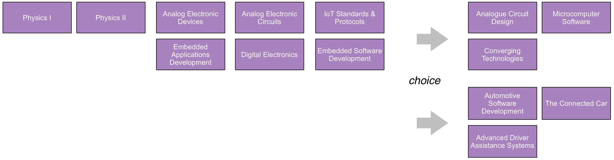
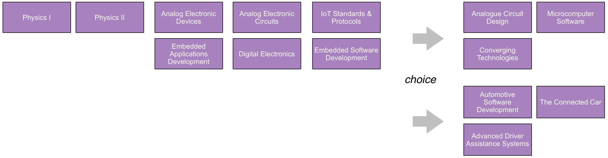

Devices
The IoT professional must be comfortable when dealing with the many kinds of devices and sysems that are the means for the Internet to interact with the environment. Such competence must be built on an awareness of the various means with which devices and systems perform, how they can be made to perform well and how their perfromance attributes may be changed
Devices Learning Path
As a student on this programme, you will start to build this competence with the single board computer, the single board micro-controllers and fundamental analogue electronics, which when combined together will afford the environmental input-output capability with basic access to the network. The single board micro-controllers combined with the fundamental analogue topics will give ready access to the analogue and low-level digital world, whose key parameters of interest can be sensed and if necessary conditioned for conversion into digital form, as well as offering an effective actuation interface for analogue change. Protocol-defined communications covering all aspects from framing commands and information to the hierarchy of reliable communications, will open up the ability to convey information and commands over various media types and allow the candidates a complete education in more complex microcontroller based internet access points.

 
